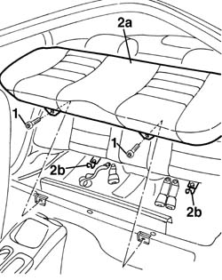

7050A20 one-piece rear seat cushion - r r
- Path
- Procedures > 70 FITTINGS > 7050 REAR SEATS > 7050A rear seat assembly > 7050A20 one-piece rear seat cushion - r r
- Kind
- repair procedure (removal / refitting; the operation number is the code)
- Applies to
- all engines; all production periods
- Interactive page
- https://sloeber94.github.io/elrnDB-a156/en/#/3238915
Applies to: all engines; all production periods
 Removing
Removing
 Refitting
Refitting1. Unscrew the screws.
2. Remove the cushion (2a) of the seat by disconnecting it from the rear check rods (2b).

Applies to: all engines; all production periods
Refitting
RemovingMake sure that the cushion is not damaged.
Place the seat and secure it to the rear check rods.
Pull out the rear seat belts.
Screw the screws and tighten them to the given torque.
 | Fastening | Component | Ø | Value (daNm) |
|---|---|---|---|---|
- | Bolt | REAR SEAT CUSHION | - | 2.2 - 2.6 |
Topics that link to this page (27)
- 1040A10 fuel tank - r + r and decant fuel
- 1040A14 fuel tank - r + r for replacement
- 1040A30 fuel filler pipe - r + r
- 1040A66 Fuel LEVEL GAUGE for submerged pump assembly - Replace.
- 1040A70 submerged pump assembly complete with level guage control - r + r
- 1040B36 rear fuel delivery line - r r
- 1040B56 fuel return line - r r
- 5505C41 cabin wiring - r r
- 5570T31 aerial coaxial lead - r r
- 5580C86 side bag wiring harness (one) lh or rh - r r or replace
- 7025B30 boot lid open control - r+r
- 7025B32 boot lid catch cable - r+r
- 7025C32 fuel filler flap catch control - r+r
- 7030B12 sliding roof (assembly) - r+r
- 7030B46 sun roof cables , one , lh or rh - r r
- 7030B50 sun roof guide , one , lh or rh - r r
- 7040H10 roof panel lining - r r
- 7040H16 roof panel lining - r r
- 7040L10 cabin floor carpet - r r
- 7050A10 rear seat - r+r
- 7050A19 rear seat squab - r r
- 7050A27 Rear seat BACKREST COVER - R.R.
- 7050A29 CABLE for device for locking/releasing BACKREST for one individual rear. seat - R.R. with seat removed
- 7065A80 pre-tensioner wiring - r r
- 7065B14 Rear seat belt ANCHORAGE ROD , (one), left or right - R.R.
- 7065B18 CENTRE REAR SEAT BELT - R.R.
- 7065B22 central safety belt anchorage link - r+r